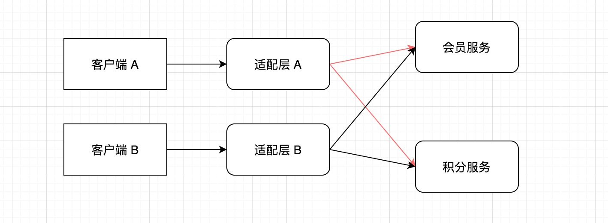

- 00 开篇导读.md.html
- 01 以真实“商场停车”业务切入——需求分析.md.html
- 02 具象业务需求再抽象分解——系统设计.md.html
- 03 第一个 Spring Boot 子服务——会员服务.md.html
- 04 如何维护接口文档供外部调用——在线接口文档管理.md.html
- 05 认识 Spring Cloud 与 Spring Cloud Alibaba 项目.md.html
- 06 服务多不易管理如何破——服务注册与发现.md.html
- 07 如何调用本业务模块外的服务——服务调用.md.html
- 08 服务响应慢或服务不可用怎么办——快速失败与服务降级.md.html
- 09 热更新一样更新服务的参数配置——分布式配置中心.md.html
- 10 如何高效读取计费规则等热数据——分布式缓存.md.html
- 11 多实例下的定时任务如何避免重复执行——分布式定时任务.md.html
- 12 同一套服务如何应对不同终端的需求——服务适配.md.html
- 13 采用消息驱动方式处理扣费通知——集成消息中间件.md.html
- 14 Spring Cloud 与 Dubbo 冲突吗——强强联合.md.html
- 15 破解服务中共性问题的繁琐处理方式——接入 API 网关.md.html
- 16 服务压力大系统响应慢如何破——网关流量控制.md.html
- 17 集成网关后怎么做安全验证——统一鉴权.md.html
- 18 多模块下的接口 API 如何统一管理——聚合 API.md.html
- 19 数据分库后如何确保数据完整性——分布式事务.md.html
- 20 优惠券如何避免超兑——引入分布式锁.md.html
- 21 如何查看各服务的健康状况——系统应用监控.md.html
- 22 如何确定一次完整的请求过程——服务链路跟踪.md.html
- 23 结束语.md.html
- 捐赠
12 同一套服务如何应对不同终端的需求——服务适配
经过前几个章节的实践，会员已可以绑定手机号，更新个人信息，绑定个人车辆信息，开通月卡，签到等功能，下面从客户端查看自己的数据入手，再聊聊服务调用的问题。
简单处理
我们已经将用户数据进行垂直拆分，分布在不同数据库中，当客户端数据展现时，就需要分别调用不同服务的 API，由前端将数据重新组装展现在用户端。
会员个人信息、车辆信息、月卡信息维护在会员库中，积分信息维护在积分库中。如果想一个页面同时展现这两块的数据，就必须由客户端发起两次接口调用，才能完整地将数据调用到，如下图所示：
这种方式相当将主动权交给前端，由前端完成数据整理，后端仅提供细粒度的服务。微服务架构在增加业务灵活性的同时，也让前端的调用变得复杂起来，有两个问题暴露得很突出：
- 前端发起多次接口请求，网络开销增大，极端情况下不利于用户体验
- 前端开发工作量增加
服务聚合
前面数据调用流程暴露出来的问题，在功能复杂、服务拆分较细时，问题就会被放大，影响产品的使用。这里就需要优化一下调用流程，我们在架构层面稍加调整，在客户端与微服务层中间增加一个适配层，目的也很简单，客户端仅发起一次请求，调用适配层服务，适配层服务中将多个子服务进行聚合，各子库里的数据按照业务规则重新组装成前端需要的数据，再返还给前端时，前端仅做展现。于是调用链就变成下图的模样：
原本客户端发起的两次请求（实际情况可能更多，据数据分散情况而定），就减少到一次请求。服务中也可以提供不同粒度的 API，极细粒度的 API，也在在细粒度 API 的基础上，提供初步的聚合接口。针对不同的数据，再在适配层在更高层面做一次数据聚合。
服务适配
服务聚会中已经初步将调用流程做了优化，但依旧有不足之处。移动互联网时代背景下，终端的形式越来越丰富，微信公众号、小程序、原生应用，再加上 Pad 端、桌面端等，面对不同的客户端，单一适配层在应对多个终端的不同需求时，难免顾此失彼，在同一个适配层协调难度极大。当终端的需求变更时，面对不同终端的 API 接口都需要做出变更，开发、测试、运维成本还是很高的。需要再进一步将结构作出变更，优化后如下图：

针对每个客户端，后端都构建一个适配层与之相对应，当一方需求变更时，仅需要对应的适配层修改即可，也无须变更更底层的后端服务。
如果客户端需要调用细粒度的服务，也可以直接调用底层微服务，并不是非要经过适配层服务，这不是绝对的。
BFF 架构
针对上面提供的服务聚合与服务适配的问题，业界早有种提法，称之为BFF 架构，全称为 Backend For Frontend，意为服务于前端的后端，本层中可以针对前端的不同需求，在不变更后端基础服务的基础上，进行服务的调整，具有语言无关性，可以采用 Java、Node.js、PHP 或者 Go 等其它语言来实现 BFF 层，至于这一层由前端开发人员维护还是后台开发人员维护，业界没有统一约定，但更倾向于由前端代码构建，因为 BFF 层与前端贴合更紧密。
项目实战
由于我们是基于 Java 平台进行开发，所以这个适配层，依然选择 Java，当然如果还有擅长的语言，如 Node.js 也可以使用。
新建两个适配层服务项目，parking-bff-minprogram-serv 和 parking-bff-native-serv 项目，分别应对小程序端和原生应用端。将这两个基本的功能添加完整，依照之前的项目配置，使其可以正常应用，比如提供接口管理界面、服务调用、断路器配置、服务注册与发现等等。
小程序与原生应用在获取会员信息时有个差别——小程序不需要车辆信息，而原生应用中需要展示车辆信息。
编写会员、积分的调用接口 feignClient 类：
@FeignClient(value = "member-service", fallback = MemberServiceFallback.class)
public interface MemberServiceClient {
@RequestMapping(value = "/member/getMember", method = RequestMethod.POST)
public CommonResult<Member> getMemberInfo(@RequestParam(value = "memberId") String memberId);
//parking-bff-minprogram-serv 适配层没有此接口
@RequestMapping(value = "/vehicle/get", method = RequestMethod.POST)
public CommonResult<Vehicle> getVehicle(@RequestParam(value = "memberId") String memberId);
}
@FeignClient(value = "card-service", fallback = MemberCardServiceFallback.class)
public interface MemberCardClient {
@RequestMapping(value = "/card/get", method = RequestMethod.POST)
public CommonResult<MemberCard> get(@RequestParam(value = "memberId") String memberId) throws BusinessException;
}
编写业务逻辑处理类：
@RestController
@RequestMapping("bff/nativeapp/member")
public class APIMemberController {
@Autowired
MemberServiceClient memberServiceClient;
@Autowired
MemberCardClient memberCardClient;
@PostMapping("/get")
public CommonResult<MemberInfoVO> getMemberInfo(String memberId) throws BusinessException {
CommonResult<MemberInfoVO> commonResult = new CommonResult<>();
// service aggregation
CommonResult<Member> member = memberServiceClient.getMemberInfo(memberId);
CommonResult<Vehicle> vehicle = memberServiceClient.getVehicle(memberId);
CommonResult<MemberCard> card = memberCardClient.get(memberId);
MemberInfoVO vo = new MemberInfoVO();
if (null != member && null != member.getRespData()) {
vo.setId(member.getRespData().getId());
vo.setPhone(member.getRespData().getPhone());
vo.setFullName(member.getRespData().getFullName());
vo.setBirth(member.getRespData().getBirth());
}
if (null != card && null != card.getRespData()) {
vo.setCurQty(card.getRespData().getCurQty());
}
//parking-bff-minprogram-serv 适配层没有此数据聚合
if (null != vehicle && null != vehicle.getRespData()) {
vo.setPlateNo(vehicle.getRespData().getPlateNo());
}
commonResult.setRespData(vo);
return commonResult;
}
}
从代码中可以看出，原先需要由客户端发起调用两次的接口，直接由适配层中完成调用，聚合后一次性返回给客户端，减少了一次交互。针对不同终端，数据响应也不一致，降低数据传输成本和部分数据敏感性暴露的可能。
至此，通过引入 BFF 适配层，又将我们的架构近一步优化，降低了前端调用的开发复杂度以及网络开销，除了服务聚合与服务适配之外，你还能想到 BFF 层有什么其它功能吗？
© 2019 - 2023 Liangliang Lee. Powered by gin and hexo-theme-book.